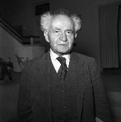
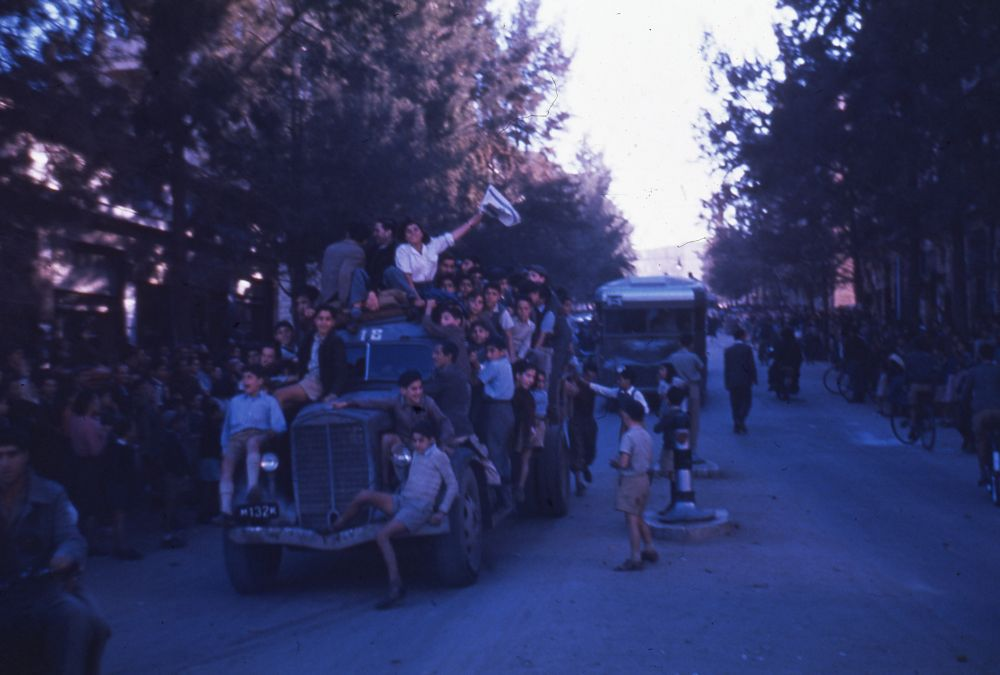

הנהלת הועד הלאומי
הודעת ד. בן גוריון
החלטת האו"מ להקים מחדש את מדינתו הריבונית של העם היהודי כחלק ממולדתו העתידה היא מפעל של צדק היסטורי המכפר חלקית לכל הפחות את המעוות ללא דוגמה שנעשה לעם ישראל בדורנו ובדורות הקודמים זה למעלה מאלף ושמונה מאות שנה.
זהו נצחון מוסרי גדול של רעיון האומות המאוחדות - רעיון הקואופרציה הבינלאומית לחיזוק השלום, הצדק והשויון בעולם. העם היהודי יזכור בהכרת תודה את מאמציהן של שתי המעצמות האדירות - ארצות הברית וברית המועצות, וכמו כן של שאר המדינות הקטנות והגדולות שהביאו לידי כך. שיתוף הפעולה של אמריקה ורוסיה בפתרון בעית ארץ-ישראל היא בשורה מעודדת בשביל כל אלה המאמינים, והעם היהודי. באפשרות קואופרציה מתמדת של ארצות המזרח והמערב למען שלום בר-קיימא בעולם.
החלטת האו"מ על הקמת המדינה היהודית מטילה אחריות כבדה על הישוב והעם היהודי כולו. זוהי בעצם תביעה לכל לגלות הכוחות הכבירים- החמריים והרוחניים - הדרושים לבנין המדינה. לקליטת המוני עולים מאירופה, מארצות המזרח ומשאר הארצות. ולפיתוח האדמות הנשמות לעיצוב חברה יהודית עצמאית שתגלם את שלושת היעודים הגדולים של נביאי ישראל: אחוה אנושית, צדק סוציאלי ושלום בין העמים.
העם היהודי שלא נכנע ליאוש גם בשעות השחורות ביותר בתולדות חייו ולא איבד אף פעם את אימונו בעצמו ובמצפון האנושי - לא יאכזב בשעה גדולה זו את ההזדמנות והאחריות ההיסטורית שניתנה לו. יהודה המחודשת תתפוס בכבוד את מקומה באומות המאוחדות כגורם של שלום, פריחה והתקדמות בארץ הקדושה. במזרח הקרוב ובעולם כולו.
הכתבה במקור מתוך עיתון "דבר" מהתאריך ה-30 בנובמבר 1947.